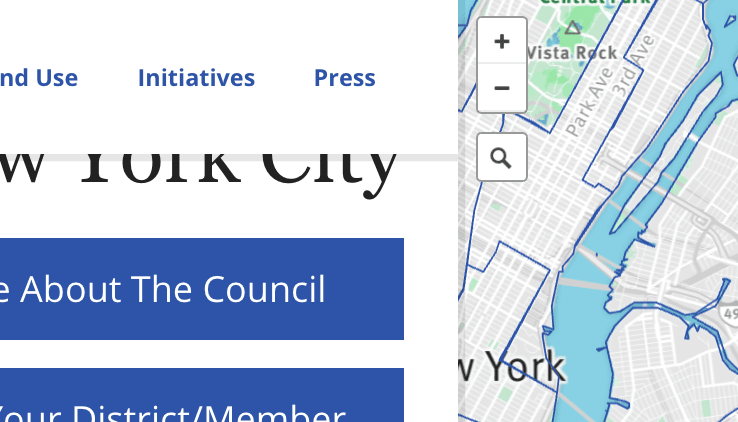
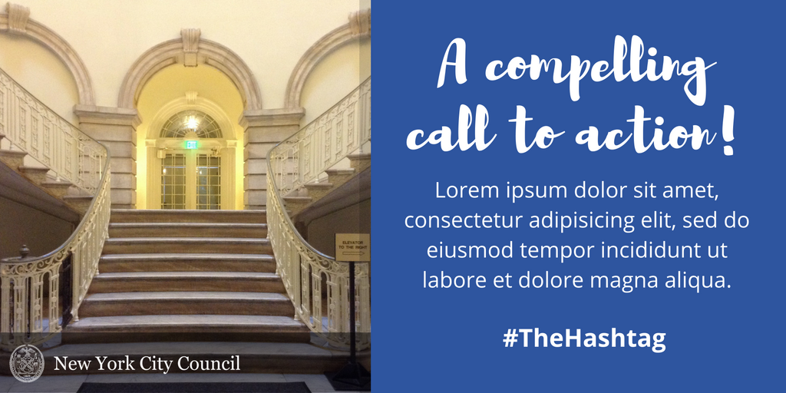

As New York City Council continues to build its online presence, one challenge we are faced with is learning how to refine our identity and apply it cohesively to all of our work. This guide acts as a central location where we house a live inventory of brand guidelines, assets, UI components, code snippets, developer guidelines, and more. Anyone working with Council's online presence is encouraged to stay familiar with this guide and help ensure that it's kept up-to-date.
1. Wordmark
Seal + type lock-up
The seal + type lock-up is Council's primary brand identifier and should be the default wordmark for all communications, except in special circumstances. Consistent application of the wordmark reinforces brand recognition and trust. For these reasons, always display the wordmark as specified here.
- The type is set in Georgia Regular
- The seal appears to the left of the type
- The seal's height is equal to twice the font size
- The seal and type are center-aligned with each other vertically
- The space between the seal and type is equal to 1/2 the font size
- The clearspace is equal to the font size
- The seal's 1.1:1 ratio is intentional and representative of Paul Manship's original design.
An em is a relative unit, equal to the specified font size — e.g. 1em in a 16-point typeface is 16 points.
2em 0.5emNew York City Council1em1em1em
0.5emNew York City Council1em1em1em
{kind=link}
{kind=link}
Observe clear space around the wordmark to optimize its visual impact and reinforce brand recognition. No other elements (e.g. text, graphics, photos) should appear in the clear space — with the exception of videos or photos over which the wordmark is overlaid.
Overlaid wordmark
When the Council wordmark is overlaid on a non-white background, a white wordmark should be used. For videos or photos, the wordmark should appear over a box with a background of rgba(0,0,0,.1), or pure black at 50 percent opacity. Videos and photos must not interfere with the wordmark's legibility, and the wordmark must not obstruct key elements of images.
2. Color palette
Primary colors
Color is an important aspect of Council's brand identity. Using color appropriately is one of the easiest ways to make sure our materials are cohesive. Our primary color palette includes a specific NYC Council blue, an dark blue, and shades of gray from black to white.
The dark blue should be used sparingly. It's meant to accent the NYCC blue, such as when links darken when they are hovered.
Secondary colors
The primary color palette is intentionally limited. But not everything can be accomplished with only blue and shades of gray. Our secondary color palette includes seven colors that span the range of the color spectrum. These additional colors are useful in data visualizations, social media graphics, and videos.
Accessible colors
For those with low vision, typographic contrast is important. In accordance with Web Content Accessibility Guidelines (WCAG) 2.0 requirements, please use the Color Contrast Checker to make sure that all text and background color combinations pass AA contrast requirements.
- Don't set light type on light backgrounds
- Don't set dark type on dark backgrounds
- Avoid relying purely on color for visual cues
3. Typography
Typefaces
Council's primary typeface is Open Sans — a humanist sans serif typeface with an upright stress, open forms and a neutral, yet friendly appearance. It's optimized for print, web, and mobile interfaces.
Specimen
Open Sans
Styles
Regular
Regular Italic
Bold
Bold Italic
Characters
ABCĆČDĐEFGHIJKLMNOPQRSŠTUVWXYZŽabcčćdđefghijklmnopqrsštuvwxyzžАБВГҐДЂЕЁЄЖЗЅИІЇЙЈКЛЉМНЊОПРСТЋУЎФХЦЧЏШЩЪЫЬЭЮЯабвгґдђеёєжзѕиіїйјклљмнњопрстћуўфхцчџшщъыьэюяΑΒΓΔΕΖΗΘΙΚΛΜΝΞΟΠΡΣΤΥΦΧΨΩαβγδεζηθικλμνξοπρστυφχψωάΆέΈέΉίϊΐΊόΌύΰϋΎΫΏĂÂÊÔƠƯăâêôơư1234567890‘?’“!”(%)[#]{@}/&<-+÷×=>®©$€£¥¢:;,.*
For headings, Council uses Georgia — a serif typeface that appears elegant but remains legible at small and large sizes, when printed or on various screen resolutions.
While the italic variant of Georgia might sometimes be necessary for emphasis, its roman variant is preferred. However, its bold weight should never be used.
Specimen
Georgia
Styles
Regular
Regular Italic
Bold
Bold Italic
Characters
ABCĆČDĐEFGHIJKLMNOPQRSŠTUVWXYZŽabcčćdđefghijklmnopqrsštuvwxyzžАБВГҐДЂЕЁЄЖЗЅИІЇЙЈКЛЉМНЊОПРСТЋУЎФХЦЧЏШЩЪЫЬЭЮЯабвгґдђеёєжзѕиіїйјклљмнњопрстћуўфхцчџшщъыьэюяΑΒΓΔΕΖΗΘΙΚΛΜΝΞΟΠΡΣΤΥΦΧΨΩαβγδεζηθικλμνξοπρστυφχψωάΆέΈέΉίϊΐΊόΌύΰϋΎΫΏĂÂÊÔƠƯăâêôơư1234567890‘?’“!”(%)[#]{@}/&<-+÷×=>®©$€£¥¢:;,.*
Font Size
The typographic scale consists of nine different font sizes. Although web fonts are sized in relative rem units, pixels are listed here for visual reference.
The quick brown fox…45px
The quick brown fox jumps…36px
The quick brown fox jumps over the…28px
The quick brown fox jumps over the lazy…24px
The quick brown fox jumps over the lazy dog. 21px
The quick brown fox jumps over the lazy dog. 19px
The quick brown fox jumps over the lazy dog. 16px
The quick brown fox jumps over the lazy dog. 13px
The quick brown fox jumps over the lazy dog. 11px
Line height
The spacing between consecutive lines of text has a similar impact on readability as measure. Too much, text appears fragmented. Too little, text is difficult to read. Suggested line heights are 1.6 for paragraphs small text and 1.2 for headings or large text.
Paragraph measure
A comfortable number of characters in each line of text is important for readability. If paragraphs are too wide, then scanning back to find the start of the next line can be awkward and the reader might miss or reread lines. Avoid setting paragraphs that are wider than 47em.
4. Icons
Font Awesome
Council uses the Font Awesome, an open-source set of 675 scalable vector icon which are easily styled with CSS.
Accessible icons
When using icons for pure decoration or visual styling, They do not need to be read when using assistive technologies. Add aria-hidden="true" to your markup so that these icons are not read.
<i class="fa fa-bicycle" aria-hidden="true"></i>When using icons to convey meaning (not decorative), ensure that the meaning is also conveyed to assistive technologies by including text with a sr-only class.
<i class="fa fa-warning" aria-hidden="true"></i><span class="sr-only">Warning!</span>5. Design effects
Boxes
Avoid putting content into lots of boxes. Instead, use whitespace to separate pieces of content and create visual hierarchy. For callouts, buttons, and other UI elements in boxes, make sure there's at least 1em of whitespace between the text and the edge of the box. When creating boxes, avoid rounded corners. Boxes should have squared corners.
Drop shadows
Drop shadows are used very sparingly and subtly. Do not apply drop shadows to content elements like buttons or text. Drop shadows should only be applied to the layout's primary containers. Shadows should not have any blur, they should retain sharp edges. The color of a shadow should be rgba(0,0,0,.1), or pure black at 10 percent opacity.

drop shadow applied to navigation and map
Media
Social media graphics
Council uses Canva to create social media graphics. Canva provides perfectly-sized templates for each social media site. When creating graphics, the most important thing is to keep it simple.

Use less text.
Don’t allow the words to overpower the image. Avoid filling all available space with text.
Make only one point.
Consider the primary call-to-action. All text should strenghten that point. Avoid listing details and features. A good graphic might follow one of these formats:
- Offer a solution to a problem
- Show how to do something
- Encourage decision-making
- Tell a relatable or inspiring story
Choose meaningful images.
The image should reinforce your message. Don’t use pictures for the sake of having a picture.
Use white space.
White space is essential in good design. It increases legibility and comprehension by almost 20 percent. Include plenty of margin around text, especially near the graphic's edges. Instead of making elements bigger, consider surrounding them with white space to create visual hierarchy and flow.
Use transparent overlays.
When text appears over an image, a black box with greater than 50 percent opacity should overlay the image. If a color other that black is used for the overlay, increase the box's opacity to make sure the text is easily readable.
Limit typography styles.
Avoid using more than three fonts. Choose fonts that are complementary. Avoid pairing fonts that are too similar.
Video
Make sure text is readable.
When displaying text in videos, make sure that it's reasonably large, uses high-contrast colours, and remains on screen for long enough to be read.
Provide subtitles.
The majority of Facebook video is watched without sound — as much as 85 percent. This also makes the vides accessibility for users with auditory disabilities.
The first three seconds are critical.
Facebook counts a view at three seconds. Video should be designed to capture attention within those first three seconds.
Disable autoplay. Specific sites like Facebook and YouTube play video automatically. When embedding video on the Council website, do not enable autoplay.
Avoid flickering content.
It's well-documented that flashing or strobing content can trigger epilepsy and migraines in susceptible individuals.